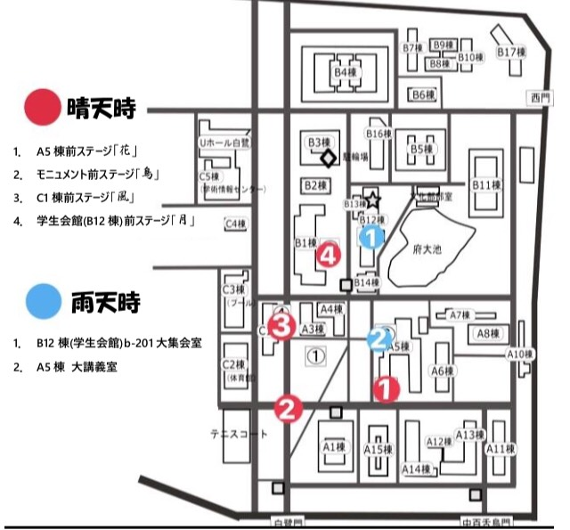
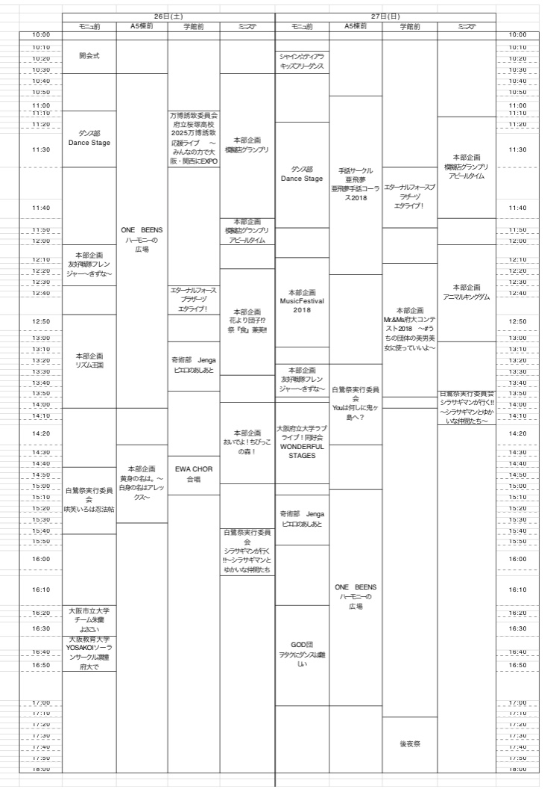

ステージ企画紹介・タイムテーブル
第57回友好祭ステージ企画がどこで行われるのか、ステージ企画タイムテーブル、ステージ企画紹介を掲載いたします。
ぜひご覧ください！！
◯ステージ場所
今年のステージは以下の4つです。
下記の地図に場所を掲載しております！
A5棟前ステージ「

」
モニュメント前ステージ「

」
C1棟前ステージ「

」
B12棟(学生会館)前ステージ「

」

◯タイムテーブル

※雨天時はタイムテーブルを変更し、大集会室・大講義室にて企画を行います。雨天時含めその他変更があった場合は再度HPに掲載いたします。その際はTwitterでも告知いたします。
友好祭公式Twitter→@yukousai
※晴天、雨天にかかわらず大集会室、大講義室で行う企画は以下の3つです。
＊B12棟(学生会館)b-201 大集会室
1日目(26日)：
10:30～12:00ピアノ部「友好祭コンサート」
17:30～19:00企画運営委員会「大学生オワコン2018決勝ステージ」
＊A5棟 大講義室
2日目(27日)：
12:00～14:00アニメ声優同好会「花守ゆみりトークショーin友好祭～中百舌鳥キャンパスへようこそ～」
◯ステージ企画紹介
以下の友好祭パンフレットP26～P28、P32～P34に友好祭ステージ企画に出演してくださる団体が紹介されています。
ぜひご覧ください！
26日(1日目)
友好祭パンフレットP.26
友好祭パンフレットP.27
友好祭パンフレットP.28
27日(2日目)
友好祭パンフレットP.32
友好祭パンフレットP.33
友好祭パンフレットP.34